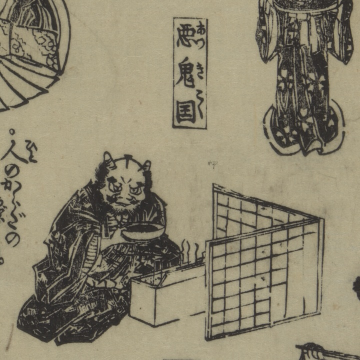

悪鬼国；アッキコク，鬼；オニ

着物をきた2本角の鬼が皿に入った液汁を飲もうとしている。
著作者：幻花情史作，暁鐘成画／出典：親書誌：U426_nichibunken_0458：無飽三財図会；アカンサンザイズエ／日付：2025／資源識別子：U426_nichibunken_0458_0001_0000
Copyright (c)2010- International Research Center for Japanese Studies, Kyoto, Japan. All rights reserved.